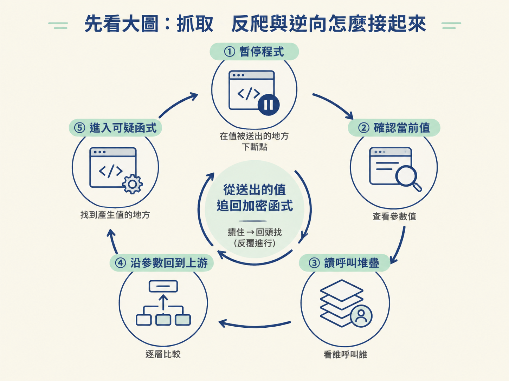
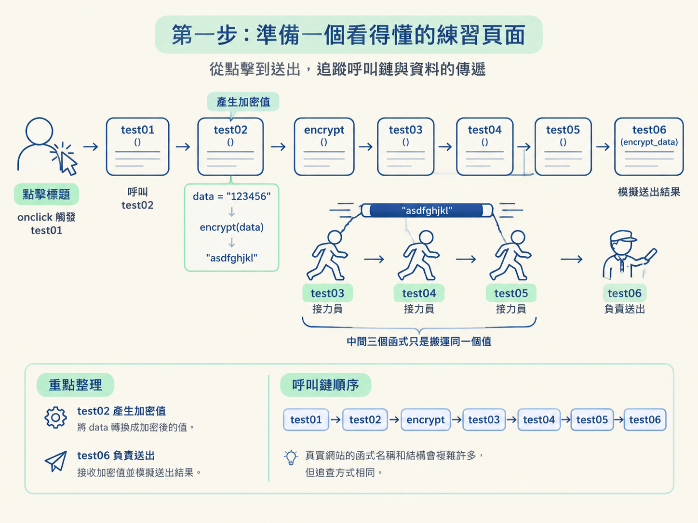
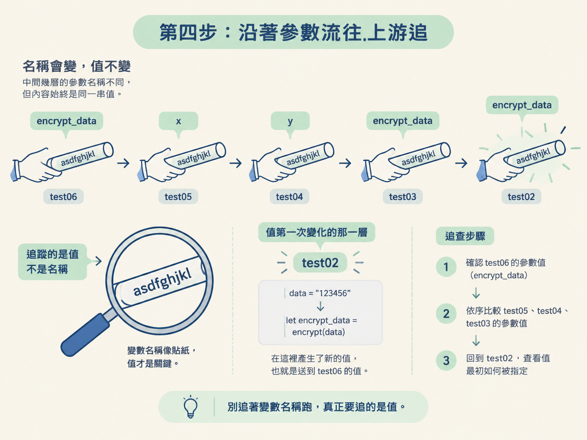

你將在瀏覽器 DevTools 裡跑完一次完整流程：先讓程式停在加密值被送出的地方，再讀取 Call Stack，沿著參數一路往回追，最後找到真正產生加密值的函式。
動手前，你需要知道加密值可能藏在哪裡（Step 1），也要會用請求堆疊或關鍵字找到候選程式（Step 2），並依情境設定斷點（Step 3）。
抓取資料時，如果請求裡出現無法直接重現的欄位，就可能碰到網站的反爬機制。接下來的逆向工作，不是從頭讀完整份 JavaScript，而是先攔住那個欄位，再回頭找出它怎麼產生。
這一節處理的正是「回頭找」這一段。整個操作迴圈是：暫停程式 → 確認當前值 → 讀呼叫堆疊 → 沿參數回到上游 → 進入可疑函式。

我們先不用真站，而是用一個結構單純的練習頁面操作。這就像先在照明充足的手術台上認清器械。等你熟悉之後，再把同一套動作搬到真實網站。
把下面的內容存成一個 .html 檔，例如 demo.html，再用瀏覽器開啟。頁面上會出現標題「断点的使用和请求堆栈」。
這段程式刻意把加密值交給多個函式傳遞，方便你觀察一個值如何從產生處，一路走到送出處。
<h3 onclick="test01()">断点的使用和请求堆栈</h3>
<script>
function encrypt(data) {
return "asdfghjkl"
}
function test01() {
console.log("test01...")
test02()
}
function test02() {
console.log("test02：数据加密")
data = "123456"
let encrypt_data = encrypt(data)
test03(encrypt_data)
}
function test03(encrypt_data) {
let a = 1
let b = 2
let c = 3
console.log("test03...")
test04(encrypt_data)
}
function test04(y) {
let a = 10
let b = 20
console.log("test04...")
test05(y)
}
function test05(x) {
console.log("test05...")
test06(x)
}
function test06(encrypt_data) {
console.log("test06: 发送ajax请求",encrypt_data)
}
</script>先確認這條呼叫鏈：
test01 → test02 → encrypt → test03 → test04 → test05 → test06
使用者點擊標題後，onclick 會觸發 test01。接著，test01 呼叫 test02。
到了 test02，程式先把 data 設成 "123456"，再呼叫 encrypt(data) 取得結果。這個結果接著經過 test03、test04 與 test05，最後送到 test06。
整條鏈裡，test02 負責產生加密值，test06 負責模擬送出結果。中間三個函式只是接力員，把同一個值往下傳。真實網站的函式名稱和結構會複雜許多，但追查方式相同。

test06。console.log("test06: ...") 那一行點擊行號，設定行斷點。onclick 會啟動整條呼叫鏈。程式執行到 test06 時便會暫停，DevTools 也會讓目前停住的那一行反白。
這一步適合用在你已經知道「值即將在哪裡被送出」的情況。先守在下游，就能確認送出的完整值，再沿著線索往上追。
如果程式沒有停住，先不要急著讀 Call Stack。這通常表示目前斷點沒有命中；應先重新確認觸發動作與斷點位置。
程式暫停後，查看右側或下方的 Call Stack。Call Stack 就是「呼叫堆疊」，它記錄目前函式是被誰一層一層呼叫過來的。
最上方是當前暫停的函式。再往下，依序是它的呼叫者、呼叫者的呼叫者，直到整條鏈的起點。
| 順序（由上而下） | 函式 | 此刻手上的值 |
|---|---|---|
| 最上（當前） | test06 | 參數 encrypt_data |
| 往下 | test05 | 參數 x |
| 往下 | test04 | 參數 y |
| 往下 | test03 | 參數 encrypt_data |
| 往下 | test02 | 區域變數 data、encrypt_data |
| 往下 | test01 | 無參數 |
| 最底 | （onclick 事件） | 觸發整個鏈的起點 |
讀這張地圖時，要同時注意兩件事。第一是執行順序：堆疊底下的函式先被呼叫，目前執行到最上方。第二是每一層握有的輸入與區域變數。
點擊堆疊裡的某一層，DevTools 會跳到對應的程式碼，並顯示那一層的變數作用域。你可以藉此比較同一個值經過每層函式時，名稱和內容有沒有改變。
test06，確認參數 encrypt_data 的值。"asdfghjkl"。test05、test04 與 test03，逐層比較參數值。test02，查看這個值最初如何被指定。你會發現，中間幾層使用的參數名稱並不相同：有時叫 encrypt_data，有時叫 y，有時又叫 x。名稱雖然一直換，裡面的值仍是同一串 "asdfghjkl"。
真正的變化發生在 test02。這裡先執行 data = "123456"，接著以 let encrypt_data = encrypt(data) 產生新的值。
因此，你現在可以確認：送到 test06 的值，是在 test02 裡呼叫 encrypt(data) 產生的，而輸入是 "123456"。
判讀時不要追著變數名稱跑。名稱像貼在接力棒上的標籤，途中可以隨時更換；真正要追的是棒子本身，也就是值。值第一次發生變化的那一層，才是值得深入檢查的位置。

Call Stack 適合回答「這一層是從哪裡被呼叫的」。如果你還想知道某一行怎麼產生結果，就要配合逐步執行按鈕。
encrypt 如何產生結果時使用。現在到 test02 的 encrypt(data) 那一行暫停，按下 Step Into。DevTools 會進入 encrypt，讓你看到它回傳 "asdfghjkl"。
接著按 Step Out，回到 test02。此時再查看 encrypt_data，你會看到它已經取得那串回傳值。這樣就不是猜測，而是親眼看見輸入進入函式、結果回到呼叫者的完整過程。
確認加密發生在 test02 後，不要只停留在下游斷點。接下來要把斷點移到更精準的位置，再重新驗證一次。
test02 的 let encrypt_data = encrypt(data) 那一行設定斷點。data 的值。encrypt。test02。這次程式會比剛才更早停住。你可以直接觀察輸入，進入加密函式，再檢查回傳結果。
這就是讀呼叫堆疊常用的節奏：先在下游攔住結果，再沿堆疊找到上游，最後把斷點移到真正產生值的位置重新驗證。
完成操作後，你應該能清楚說出：
被送出去的加密值asdfghjkl，是在test02裡呼叫encrypt(data)產生的，而輸入data是123456。
這就是本節要得到的結果。你不需要在這一步分析 encrypt 使用了什麼演算法；那是後面案例要處理的事。此刻的任務，是把「送出的值」「傳遞路徑」和「產生它的函式」準確對上。
先在下游攔值，再用 Call Stack 往上游找。比較每一層時，要看值，不要只看參數名稱。找到值第一次改變的位置後，用 Step Into 進入函式，用 Step Out 回到呼叫者，最後把斷點移到上游重新驗證。
練熟這套動作後，下一步就能把它接回真實網站：從實際請求裡挑出需要重現的欄位，再規劃要用哪一條路徑定位產生它的程式。